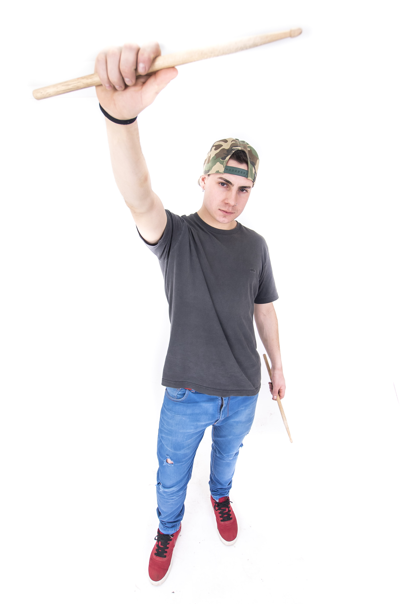

El fue uno de los fundadores de esta hermosa banda. Empezo a cantar cuando apenas tenia 10 años fue algo que le llamo mucho la atencion y lo usaba para poder despejarse de la realidad.
-

desde muy chiquito le llamo la atención la música, a los catorce años se pudo comprar su primera guitarra ya que se había encontrado 100 dólares en unas vacaciones., el era auto didacta, hasta que cumplió los dieciocho años y trabajando con su primer sueldo pudo comprar su primera batería que fue una “bateria power”,fue a diferentes escuelas de música para poder aprender a tocar. Luego se entero por un amigo que Frases Nómades estaba buscando un baterista y fue ese mismo día, lo llamaron días después diciendo que había quedado.

empecé como autodidacta a los 15 años, tocando la guitarra. Y yendo a varios profesores (Mauro Serra, Pablo Fiorentini, Federico Barabino, Hernán Rupolo). Empecé con las bandas masomenos a los 17/18. En el mientras tanto aprendí un poco a tocar el bajo y la batería. Masomenos para los 24 me empezaron a interesar los estudios de grabación y la producción musical, entonces empece con eso. Estudie música en la universidad Nacional de Tres de Febrero, tengo varios cursos hechos sobre producción y ahora estoy estudiando Bajo en el Conservatorio Leopoldo Marechal.

: Empezó de chiquito a los 13 años en clases de guitarra,Tuvo varios profesores y siempre se llevo un aprendizaje de cada uno de ellos ,el ultimo peofe que tuvo fue Pablo Quinteros que toca conmigo en frases ahora .A eso de los 16 /17 años a esa edad el empezó a tocar y aprender el solo en su casa mirando videos de varios guitarristas en YouTube. Ahi desarrollo más técnica y prolijidad en la guitarra hasta el día de hoy, luego en una juntada pudo conocer a Jony y empezaron a tocar juntos hasta que decidieron formar Frases Nómades

Nació y creció en merlo norte, en su casa siempre había una guitarra criolla de su hermano mayor. El cual le llamo la atención en la música. Hasta que a los 17 años empezó a tocar la guitarra como hobbie. A los 19 se pudo comprar su primera guitarra eléctrica. A los 21 empezo a tocar con una banda de reggae que se llama Ky mic reggae. Luego empecé a estudiar en el conservatorio de morón, un día volviendo de estudiar en el tren se encontro a uno de los ex participantes de la banda el cual lo invito a hacer ensayo con la guitarra., Desde ese momento se pudo involucrar con Frases Nómades Durante un tiempo toco la batería, ya que por diferentes circunstancias la banda no tenía baterista. Hasta que conseguimos uno nuevo y ahí volvió a su instrumento de origen